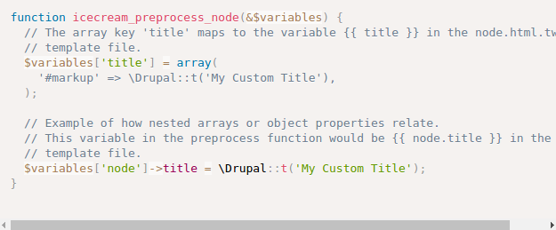

- Preprocess functions allow Drupal themes to manipulate the variables that are used in Twig template files by using PHP functions to preprocess data before it is exposed to each template.
- All of the dynamic content available to theme developers within a Twig template file is exposed through a preprocess function.
- Understanding how preprocess functions work, and the role they play, is important for both module developers and theme developers.
In this article, we need understand:
- What preprocess functions are and how they work
- The use case for preprocess functions
- The order of execution for preprocess functions
Preprocess functions
- Preprocess functions can be used to perform additional conditional logic and data processing of the variables present in a Twig template file. Preprocess functions are optional, and are defined in a theme's THEMENAME.theme file.
- Preprocess functions are called once for each time a template is used.
- Preprocess functions follow a specific naming convention:
THEMENAME_preprocess_HOOK() - Each preprocess function receives a single argument, usually named
$variables, that is an associative array. The array is passed by reference so that you can manipulate the data it contains. The keys of this array directly correspond with the names of the variables in the preprocess function's corresponding template file.
For example, your THEMENAME.theme file might include a preprocess function like the following which acts on variables for the node.html.twig template file:

In addition to the template-specific preprocess functions, there is also a single THEMENAME_preprocess ()function that is called for every template file.This function receives a second argument which is the hook or template name. This can be used for scenarios where you want to perform data processing for every single template file.
Modules can also implement preprocess functions, and frequently do so in order to define the default set of variables available in a template file. The complete list of preprocess functions called for a template file is below, listed in the order they are called (if they exist):
template_preprocess(&$variables,$hook): Creates a default set of variables for all theme hooks with template implementations. Provided by Drupal Core. https://api.drupal.org/api/drupal/core%21includes%21theme.inc/function/template_preprocess/8.3.xtemplate_preprocess_HOOK(&$variables): Should be implemented by the module that registers the theme hook, to set up default variables. https://api.drupal.org/api/drupal/core%21includes%21form.inc/function/template_preprocess_select/8.3.xMODULE_preprocess(&$variables,$hook): hook_preprocess() is invoked on all implementing modules.- https://api.drupal.org/api/drupal/core%21modules%21system%21tests%21modules%21common_test%21common_test.module/function/common_test_preprocess/8.3.x
MODULE_preprocess_HOOK(&$variables): hook_preprocess_HOOK() is invoked on all implementing modules, so that modules that didn't define the theme hook can alter the variables. https://api.drupal.org/api/drupal/core%21modules%21node%21node.module/function/node_preprocess_html/8.3.xENGINE_engine_preprocess(&$variables,$hook): Allows the theme engine to set necessary variables for all theme hooks with template implementations.ENGINE_engine_preprocess_HOOK(&$variables): Allows the theme engine to set necessary variables for the particular theme hook.THEME_preprocess(&$variables,$hook): Allows the theme to set necessary variables for all theme hooks with template implementations.THEME_preprocess_HOOK(&$variables): Allows the theme to set necessary variables specific to the particular theme hook. https://api.drupal.org/api/drupal/core%21themes%21bartik%21bartik.theme/function/bartik_preprocess_html/8.3.x
Tips and tricks
Preprocess functions should always return render arrays. Twig will render arrays to HTML automatically when they are printed. And there is no need to call theme()ordrupal_render()inside a preprocess function. This allows for more customization within the Twig template file, and is more performant because you don't end up rendering an array that is never displayed on the page.